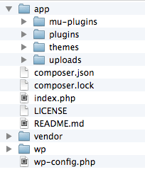

Package managers: manage complexity git clone git@github.com:growdigital/groundwork.git composer install 
Why is this important? Principles universally applicable Concentrate on what you are doing Know and delegate dependencies